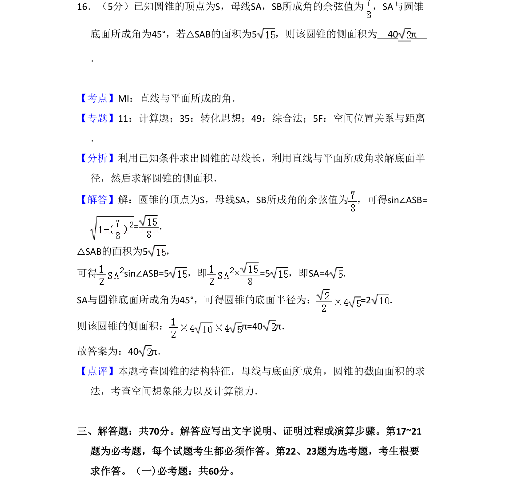
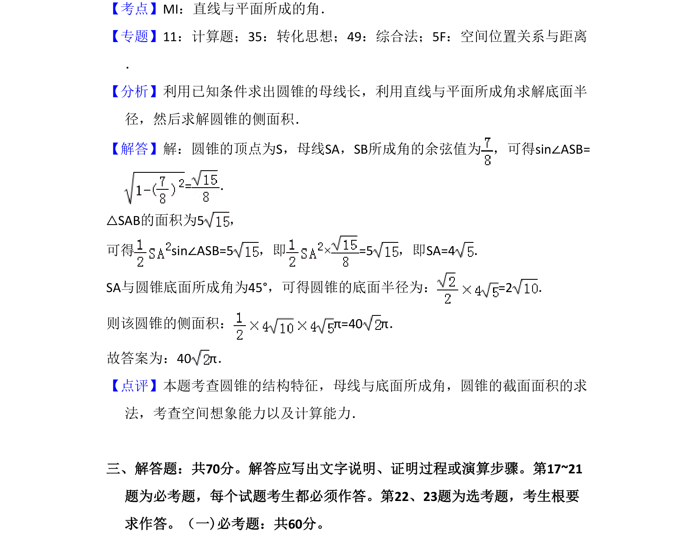

考点：圆锥侧面积 线面角 解三角形 空间几何计算

圆锥的侧面积计算，涉及母线夹角余弦值、线面角及截面面积条件求母线长和底面半径。

📄 原 PDF 第 12 页：
素材/真题/吉林/2008-2024·（吉林）数学高考真题/2018年高考数学试卷（理）（新课标Ⅱ）（解析卷）.pdf
16．（5分）已知圆锥的顶点为S，母线SA，SB所成角的余弦值为 ，SA与圆锥 底面所成角为45°，若△SAB的面积为5，则该圆锥的侧面积为 40 π ．
【考点】MI：直线与平面所成的角．菁优网版权所有 【专题】11：计算题；35：转化思想；49：综合法；5F：空间位置关系与距离 ． 【分析】利用已知条件求出圆锥的母线长，利用直线与平面所成角求解底面半 径，然后求解圆锥的侧面积． 【解答】解：圆锥的顶点为S，母线SA，SB所成角的余弦值为 ，可得sin∠ASB= =． △SAB的面积为5， 可得sin∠ASB=5，即×=5，即SA=4． SA与圆锥底面所成角为45°，可得圆锥的底面半径为：=2． 则该圆锥的侧面积：π=40 π． 故答案为：40π． 【点评】本题考查圆锥的结构特征，母线与底面所成角，圆锥的截面面积的求 法，考查空间想象能力以及计算能力． 三、解答题：共70分。解答应写出文字说明、证明过程或演算步骤。第17~21 题为必考题，每个试题考生都必须作答。第22、23题为选考题，考生根要 求作答。（一)必考题：共60分。